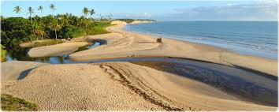
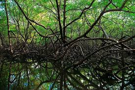
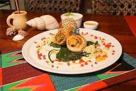
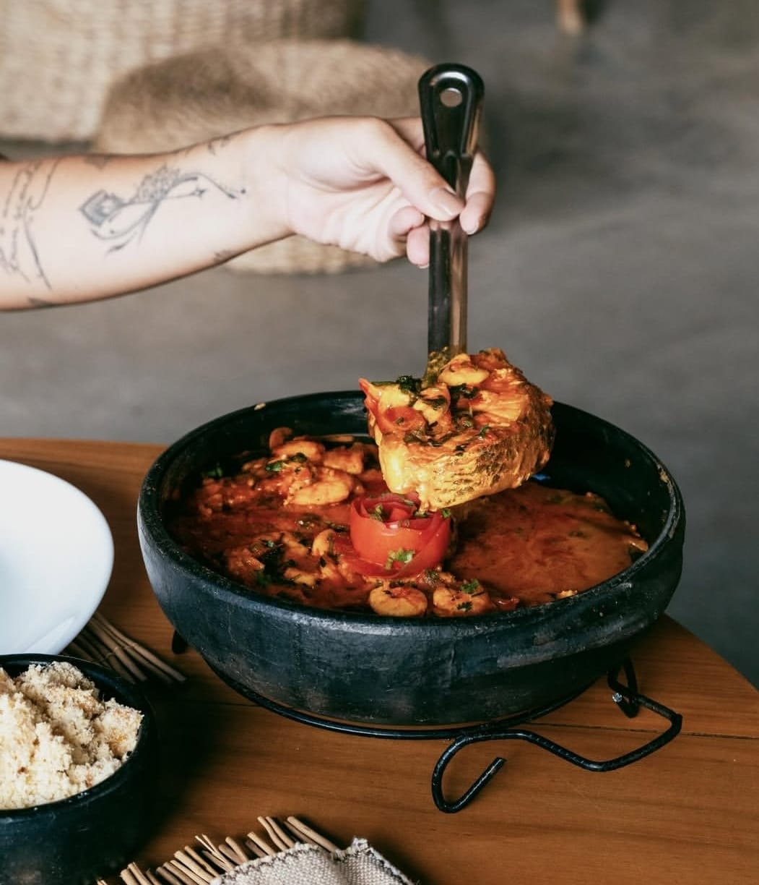

Passeios turísticos

Cumuruxatiba é uma vila tranquila conhecida por suas praias preservadas, falésias e atmosfera rústica. O lugar é famoso pelo turismo sustentável e pelas águas calmas.

Barra do Cahy é considerada uma das praias mais bonitas do Brasil. É o ponto onde o rio Cahy encontra o mar e também um local histórico ligado à chegada dos portugueses ao Brasil.
Pontos ecológicos

Os manguezais da Reserva Extrativista de Cassurubá são fundamentais para a biodiversidade marinha e servem como berçário natural para diversas espécies de peixes e crustáceos.

O Parque Nacional Marinho de Abrolhos abriga um dos maiores bancos de corais do Atlântico Sul e recebe baleias jubarte durante a temporada de migração.
Restaurantes

Restaurantes locais oferecem pratos tradicionais com frutos do mar frescos, preparados por comunidades da região.

A culinária regional inclui moquecas, peixes frescos e receitas típicas da Bahia preparadas com ingredientes locais.